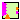

This package contains models that represent digital up/down counter.
Extends from Modelica.Icons.Package (Icon for standard packages).
| Name | Description |
|---|---|
|  Counter | Model of an Up-Down counter |
| Interfaces | |
| Functions | |
| Examples |
 IndustrialControlSystems.Logical.Counter.Counter
IndustrialControlSystems.Logical.Counter.Counter
Model of an Up-Down counter.
At each time step Ts the inputs are read and the new output values Q and
CV are computed.
In the former image, are reported the S (Set), R (Reset), CU (CountUP),
CD (CountDown) signals.
The latter images contains the CV (Current Value) and the PV(Preset Value).


The counter update the CV when the Set signal rises, then for each rising edge of the Count Up (CU)
or Count Down (CD) signals the CV is incremented or decremented by 1.
The Set signal has to be high during this phase, otherwise the rising edges are not detected.
When the Reset (R) signal rises, the counter is reset to zero.
Constraints
The current value CV must be
0 <= CV <= MaxWhere Max is the module of the counter.
Extends from Interfaces.BaseCounter (Partial interface of a generic counter).
| Name | Description |
|---|---|
| Ts | Sampling time [s] |
| Max | module of counter |
| Name | Description |
|---|---|
| CU | Count Up: The counter is incremented by 1 if the signal state changes from 0 to 1 |
| CD | Count Down: The counter is decremented by 1 if the signal state changes from 0 to 1 |
| S | set: Sets the counter with the value at the Preset Value (PV) |
| R | reset: Sets the counter whit the value 0, and stop the counting |
| PV | Preset Value |
| CV | Current Value |
| Q | status of the counter (1: counting, 0: not counting) |